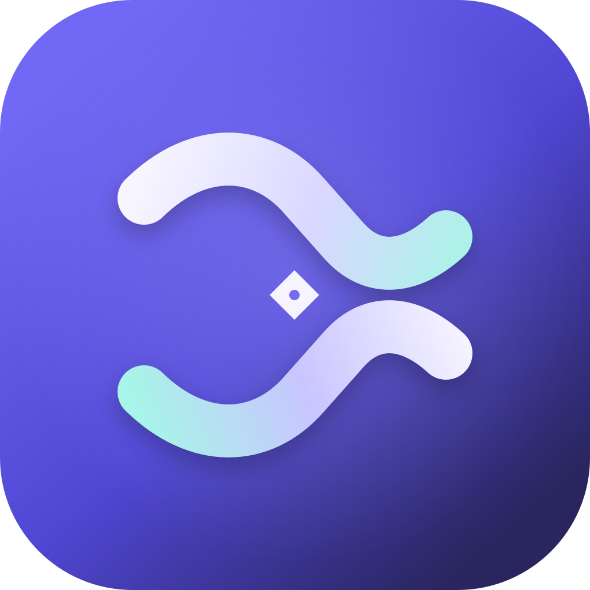

PASTEFLOW · SYMBOL DETAIL 01
灵隙：让转换发生在留白里
从探索方向 01 深入。标志不直接描绘剪贴板或文件，而用两条折返的内容流围出一个安静的中心空隙，表达灵贴在复制与粘贴之间理解场景、完成转换。
符号核心
两股流线从相对方向进入，在中心短暂停顿、相互映照，再继续向外展开。中心的留白是“灵隙”——内容变形的瞬间，也是整个符号的记忆锚点。两端的弧线保持开放，表达轻量、持续、非侵入。
QUIET INTELLIGENCE · CONTEXTUAL FLOW · LOCAL FIRST

图形语法
双流折返
上下两条曲线不是速度线，而是同一内容在不同语境中的两种形态。曲线切线平滑，端点圆润，避免产生强制导航感。
中心灵隙
菱形留白取代常见箭头。它提示“发生了变化”，但不把产品限制为文件传输或单一格式转换。
微小核心
中心细小圆点像一次识别/落点确认。它为图标增加精度和温度；菜单栏极小尺寸版去掉此细节。
应用图标 · 尺寸检查
深靛蓝到紫色的底色承接现有品牌 Token；薄荷青只出现在流线转折处，暗示内容从原始状态变为就绪状态。
128 px
64 px
32 px
#7168F5 · 灵感紫
#5047D5 · 靛流
#29265F · 夜幕
#A9F4E7 · 薄荷信号
菜单栏 · 原生单色轮廓
使用黑色模板图形和透明背景，由 macOS 按状态栏外观反相呈现。暂停态采用半透明与斜杠；就绪态添加微型圆点，沿用 UI Spec 中的状态语义。
16 px
22 px · 规范尺寸
32 px
设计取舍与后续定稿点
选择这套结构的原因
不依赖字母或文字；中心留白有专属识别点；彩色版与单色版共享骨架；可扩展为状态动画，但静止状态本身成立。
进入正式接入前需要确认
评审流线宽度、中心菱形比例和薄荷青强度。确认后再导出 macOS .icns/PNG 资源，并将菜单栏模板图接入 TrayIcon 状态更新。
本稿建议：先保留两条流线与中央菱形，不增加字母 P、文字或星芒。品牌识别优先依靠负形与整体比例，而不是叠加更多含义。